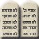

99-574
ד"ר יצחק ברנד

ערכים וטעמים במבחן ההלכה
|  |
99-574 ד"ר יצחק ברנד |
|
עדכון אחרון: 23/03/2011 13:31
קורס זה הנו שילוב של: 99576 (ערכים בהלכה) ו-99571 (טעמים בהלכה) שהתאחדו בתשס"ד
סיכומי שיעור
תשע"א:
תשס"ט:
תשס"ו:
מחברת קורס מצטברת - יונתן מודריק
תשס"ד:
מסכם: ליאור צירלין
24.02.04 - 02.03.04 - 09.03.04 - 16.03.04 - 23.03.04 - 30.03.04 - 20.04.04 - 04.05.04 - 11.05.04 - 18.05.04 - 01.06.04 - 08.06.04 - 15.06.04
מסכם: שי פרץ
24.02.04 - 02.03.04 - 16.03.04 - 23.03.04 - 20.04.04 - 11.05.04
מסכמת:אפרת אלדן
30.03.04 - 20.04.04 - 04.05.04 - 11.05.04 - 01.06.04 - מחברת מצטברת (חלקית)
תשס"ג (לשעבר 99-576 - ערכים בהלכה):
מחברת קורס מצטברת - ליאור צירלין
מסכמת: נורית הירשקורן
31.10.02 - 7.11.02 - 21.11.02 - 28.11.02 - 19.12.02 - 26.12.02 - 02.01.03
מסכמת: סנדי ליפשיץ
24.10.02 - 31.10.02 - 7.11.02 - 14.11.02
מסכם: ירון אונגר
17.11.02 - 24.10.02 - 31.10.02
תשס"ב (לשעבר 99-571 - טעמים בהלכה):
מקורות
תשס"ו:
תשס"ד:
מקור 1 - גדול כבוד הבריות - תלמוד ותנאים
מקור 9 - השתנות הטבעים- דף 1 - דף 2
תשס"ג (לשעבר 99-576 - ערכים בהלכה):
מקור 1 - מסכת ברכות בעניין כבוד הבריות בלשון קלה - תודה לירון אונגר
הכנה למבחן
מחברת הכנה למבחן - תשע"א - דורון הינדין
מבחנים משנים קודמות
תשע"א - מועד א - פתרון בציון 90, פתרון בציון 99 - מתי רוזנבאום
תש"ע - מועד א
תשס"ט - מועד א
תשס"ו - מועד א + פתרון בציון 93 , מועד ב + פתרון בציון 92
תשס"ד - מועד א + הצעה לפתרון + פתרון בציון 91 - אוריה קניג + פתרון בציון 85 - ליאור , מועד ב + פתרון בציון 95
תשס"ג (לשעבר 99576 - ערכים בהלכה) - מועד א + פתרון רשמי , מועד ב
תשס"ג (לשעבר 99571 - טעמים בהלכה) - מועד א , מועד ב
תשס"ב (לשעבר 99571 - טעמים בהלכה) - מועד ב
תשס"א (לשעבר 99576 - ערכים בהלכה) - מועד א
{kind=link}